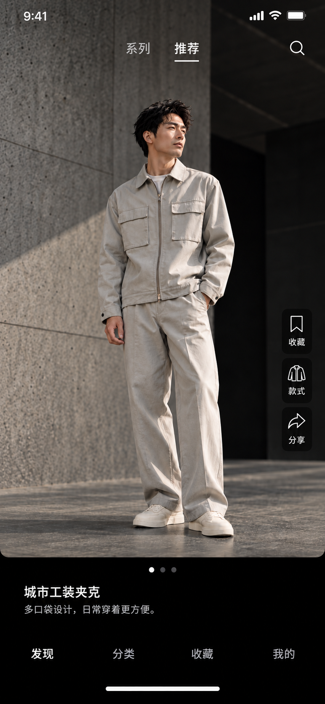
顶部铺满摄影、系列推荐、右侧暗底操作、黑底文案、四项导航
当前页、六张缩略图、目录、阅读进度、四项导航
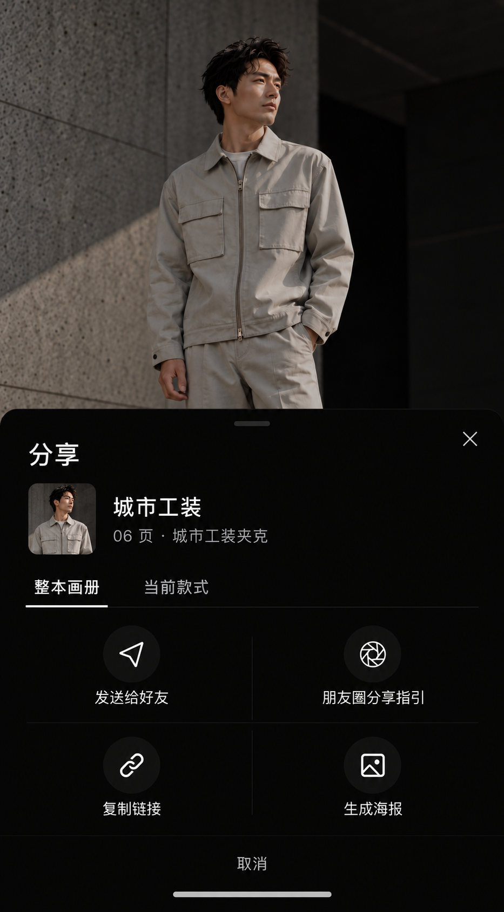
画册摘要、整册与当前款式、好友、朋友圈指引、链接、海报、取消
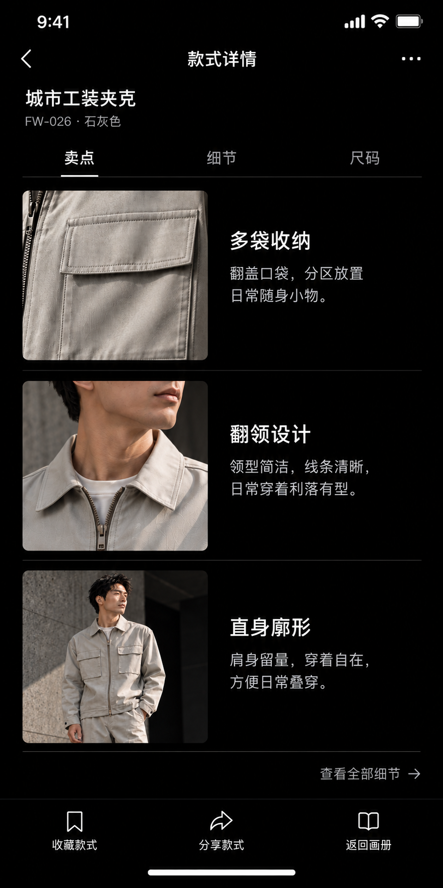
共用款式详情外壳、三条卖点图文、黑底收藏分享返回
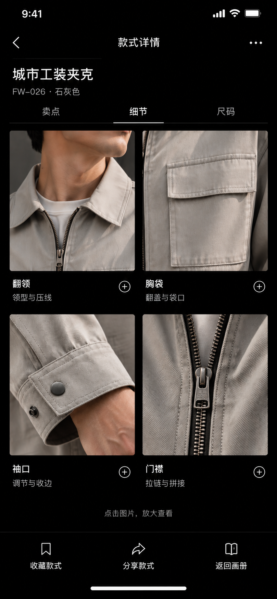
共用款式详情外壳、四张局部照片、图注、放大入口、黑底工具栏
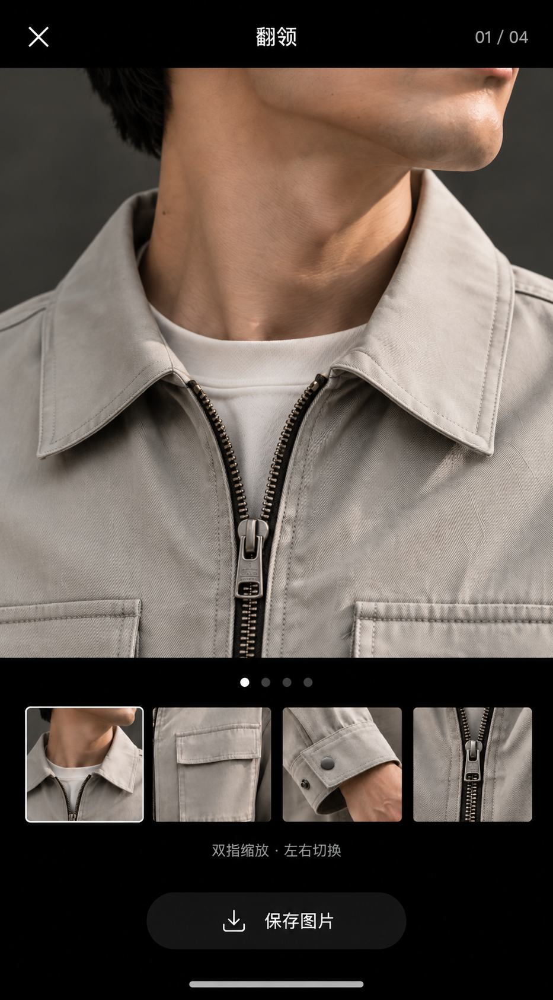
独立大图、关闭、标题计数、四图导航、缩放提示、保存
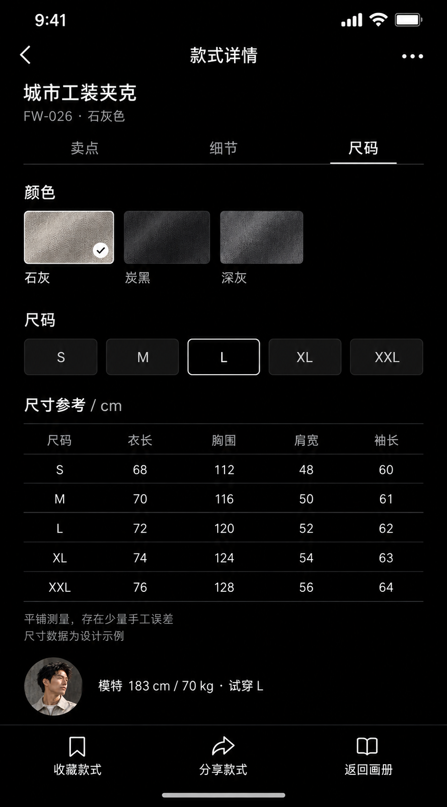
同款式详情外壳、颜色、S至XXL、完整尺寸表、模特、黑底工具栏
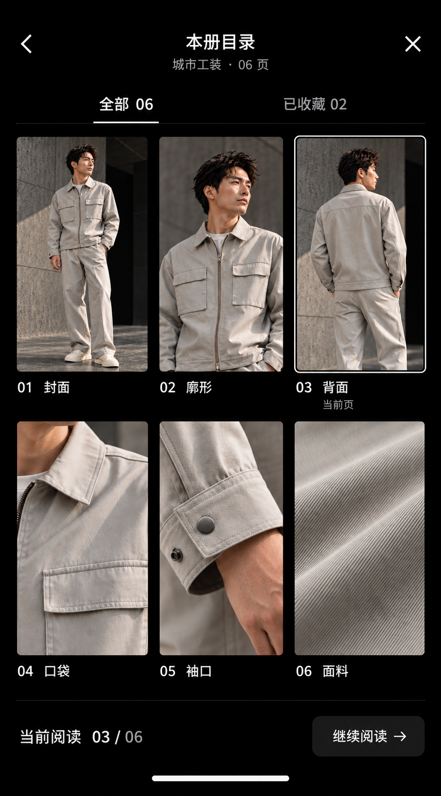
全部与已收藏、三列六页、当前阅读、继续阅读
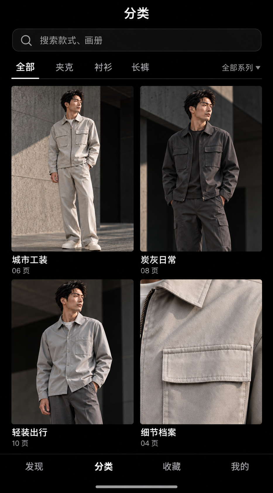
搜索、系列筛选、品类筛选、双列封面、页数、四项导航
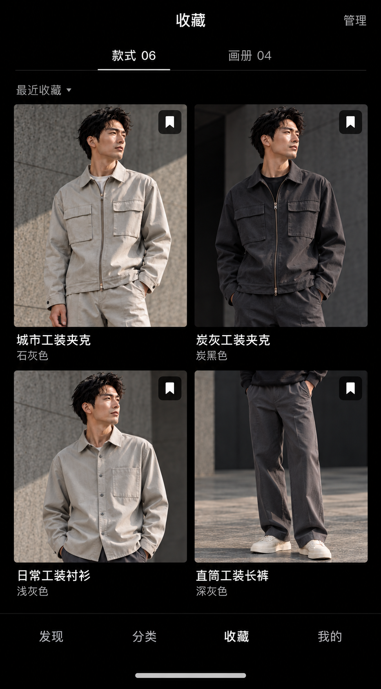
款式与画册计数、管理、排序、双列内容、收藏标记、四项导航
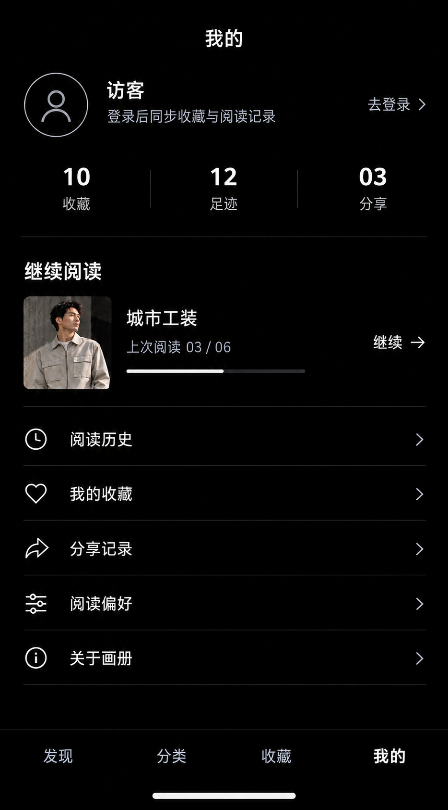
访客登录、统计、紧凑继续阅读、历史收藏分享偏好入口、四项导航
干净竖版成品、产品图、名称编号、简短文案、页脚，无界面按钮
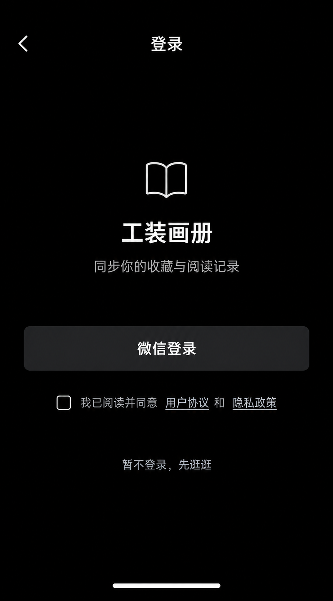
微信登录、协议隐私、暂不登录、返回，无图片背景
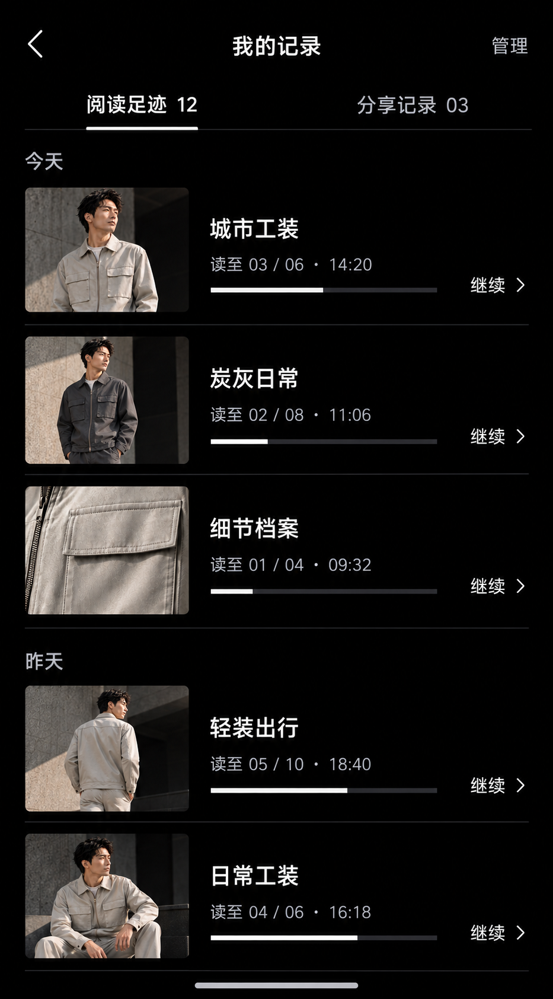
阅读足迹与分享记录、今天昨天分组、进度、继续、管理
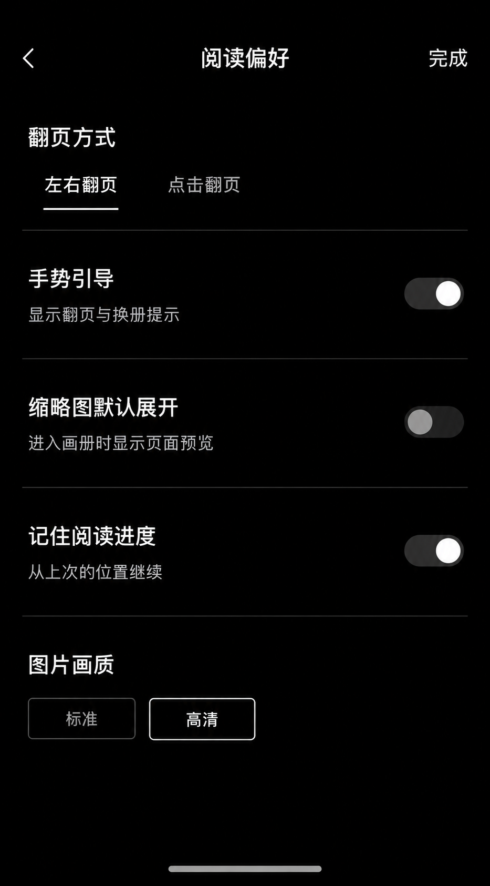
翻页方式、手势、缩略图、进度记忆、画质、完成
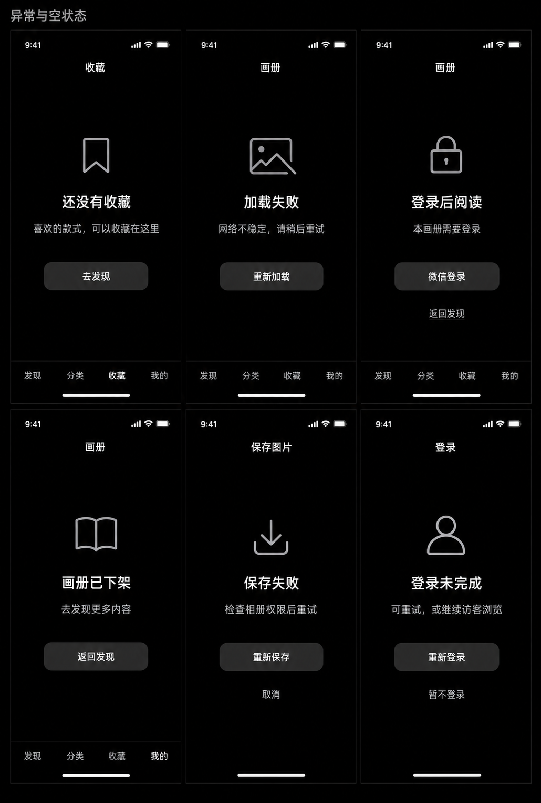
空收藏、弱网加载重试、权限登录、内容失效、保存失败、登录取消重试